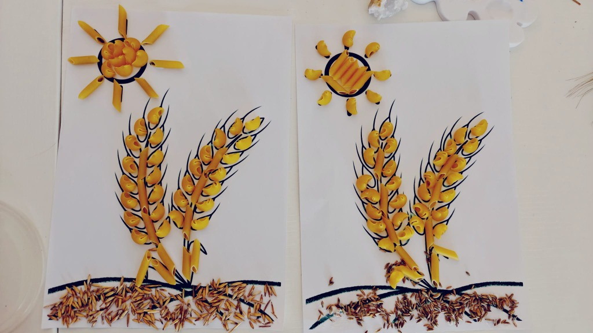

El campo del abuelo y tío
¡Acompaña a Jimena y a su familia a descubrir la agricultura!
Cargando historia...
Presentando a nuestros amigos cereales
¡Pulsa sobre un cereal para conocerlo!
¡Hola, soy el Trigo! Soy el cereal más famoso. Mis espigas son doradas y con mis granos hacemos harina blanca para preparar pan de molde, galletas, bizcochos y espaguetis.
Paso 1 de 10
Preparar la tierra
El tractor ara el campo para dejar la tierra blandita y lista.
Escucha con atención... ¿Qué máquina hace este ruido?
¿De qué cereal se hace este alimento?
Pulsa sobre el cereal correcto
🎨
¡Taller de Arte del Campo!
¡Vamos a rellenar nuestra plantilla pegando macarrones y semillas reales!

1
Reparte la plantilla dibujada con las espigas y el sol.
2
Pon pegamento con cuidado dentro del sol, las espigas y el suelo.
3
¡Pega macarrones en las espigas/sol y semillas reales en el suelo!